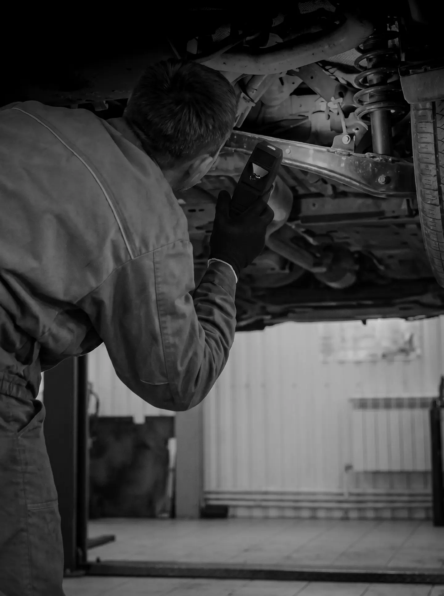
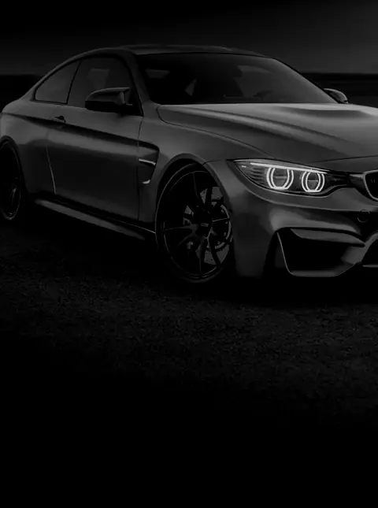

Пн – пт 09–18, сб 09–14
Автосервис в Кишинёве Цену узнаете до начала работ.
Выберите работу и запишитесь:
- Больше 20 подъёмников
- Больше 15 лет на рынке
- Без лишних ремонтов
Проблема с машиной?
Загорелась лампочка? Нажмите на неё.
Что мы ремонтируем
Один сервис для диагностики, ремонта, шиномонтажа, техосмотра и мойки.
 Компьютерная диагностикаСчитываем ошибки и находим причину, а не только симптом.от 300 лей
Компьютерная диагностикаСчитываем ошибки и находим причину, а не только симптом.от 300 лей
ТО и замена маслаМасло, фильтры и плановые проверки в нужный срок.от 250 лей ТормозаКолодки, диски, суппорты и тормозная жидкость.от 300 лей
ТормозаКолодки, диски, суппорты и тормозная жидкость.от 300 лей ШиномонтажСезонная смена шин, балансировка и ремонт проколов.от 400 лей
ШиномонтажСезонная смена шин, балансировка и ремонт проколов.от 400 лейКак нас найти
Мы находимся в Индустриальном парке Tracom, ул. Колумна 170. Удобно добираться и общественным транспортом, а пока мы работаем с машиной, можно отдохнуть в зоне ожидания.
ул. Колумна 170 (Индустриальный парк Tracom)
Кишинёв
Пн – пт 09–18, сб 09–14
- Понедельник – пятница
- 09:00 – 18:00
- Суббота
- 09:00 – 14:00
- Воскресенье
- Выходной
ул. Колумна 170 (Индустриальный парк Tracom)
Кишинёв
Частые вопросы
Вы работаете со всеми марками?
Да. Работаем с европейскими, японскими, корейскими и американскими автомобилями, от городских малолитражек до внедорожников.
Нужно ли записываться?
Запись гарантирует время и свободное место. Без записи примем, если есть место, но, возможно, придётся подождать.
Сколько стоит ремонт?
Точная цена зависит от машины и запчастей. После диагностики вы получаете предложение и решаете, начинаем ли мы. Ориентировочные цены есть на странице «Цены».
Можно подождать машину у вас?
Да. Для коротких работ есть зона ожидания с Wi-Fi, напитками и закусками.
Какой у вас график?
Понедельник – пятница 09:00 – 18:00, суббота 09:00 – 14:00. В воскресенье выходной.
Где вы находитесь?
ул. Колумна 170, Индустриальный парк Tracom, Кишинёв. Удобно добираться и общественным транспортом.
Наша мастерская в TikTok
Показываем, что находим в машинах, сколько стоит ремонт и какие ошибки чаще всего делают водители. Более 400 000 просмотров в 2026 году.
Подписаться на @autorepublic.md
Запишитесь за 2 минуты
Выберите работу, день и время. Мы перезвоним для подтверждения.